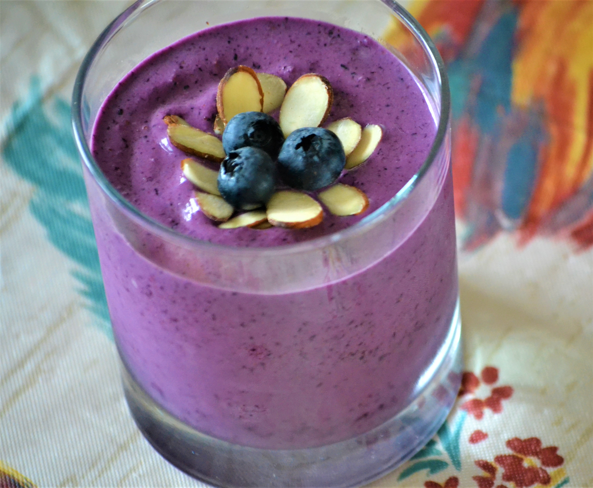

Almond Berry Smoothie

Description
Almond milk and almond butter are the star ingredients in this berry smoothie for a nutritious, on-the-go meal that is vegan and paleo-friendly.
Per Serving:
321 calories; protein 5.3g; carbohydrates 55.6g; fat 11.7g; sodium 161.7mg.
Ingredients
- 1cup frozen blueberries
- 1 banana
- ½ cup almond milk
- 1 tablespoon almond butter
- water as needed
Steps
- Combine blueberries, banana, almond milk, and almond butter in a blender; blend until smooth, adding water for a thinner smoothie.